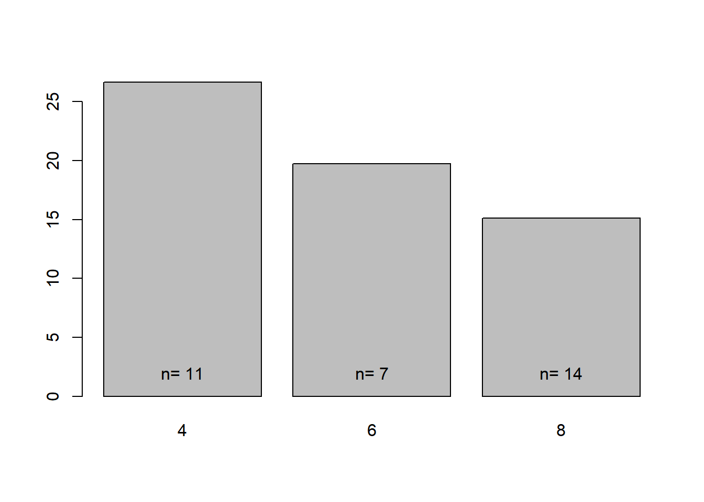
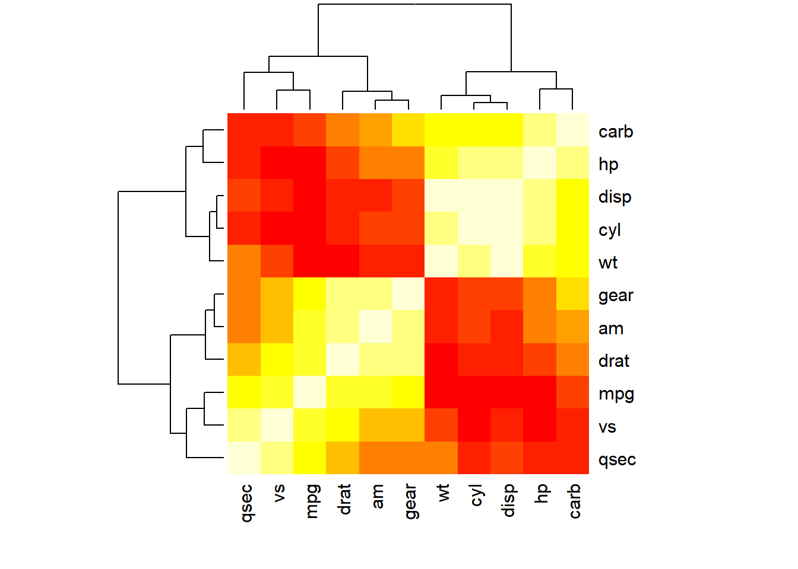
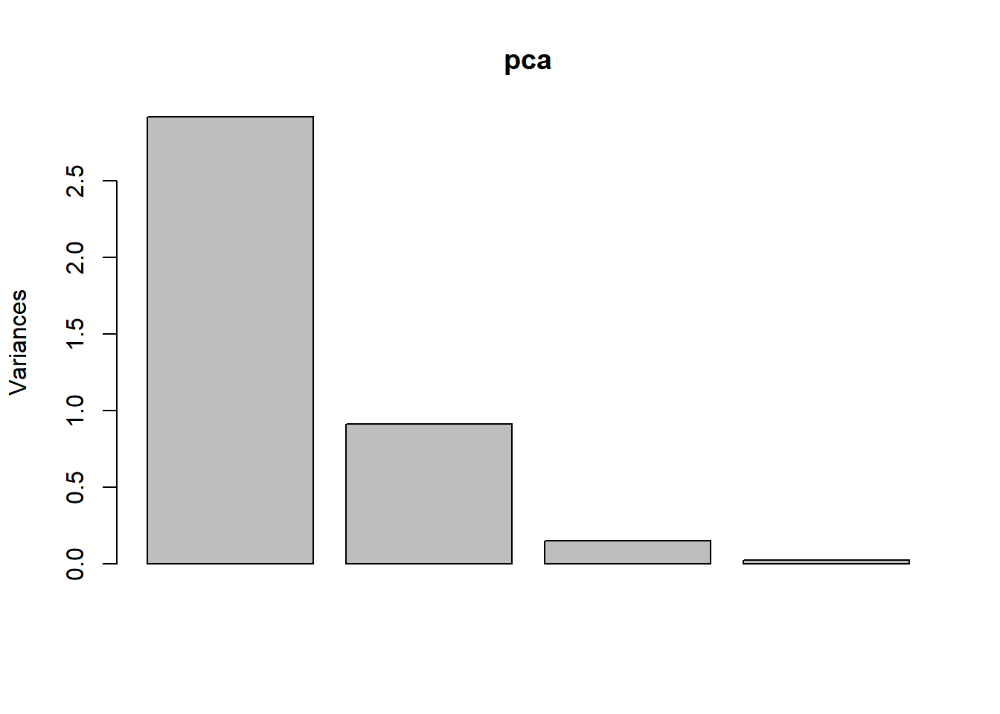
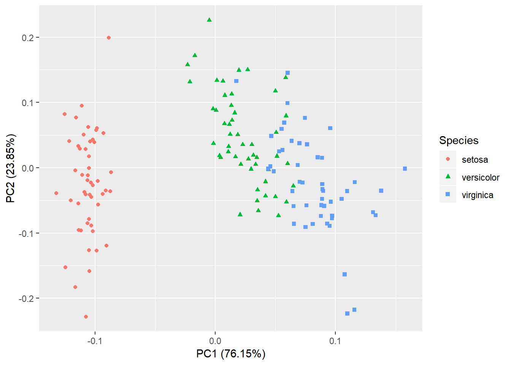

Chapter 2 Visualizing data set-Analyzing cars and iris flower data sets
2.1 Basic concepts of R graphics
In addition to the graphics functions in base R, there are many other packages we can use to create graphics. The most widely used are lattice and ggplot2. Together with base R graphics, sometimes these are referred to as the three independent paradigms of R graphics. The lattice package extends base R graphics and enables the creating of graphs in multiple facets. The ggplot2 is developed based on a so-called Grammar of Graphics (hence the “gg”), a modular approach that builds complex graphics using layers.
Note the recommended textbook R Graphics Cookbook includes all kinds of R plots and code. Some are online: http://www.cookbook-r.com/Graphs/. There are also websites lists all sorts of R graphics and example codes that you can use. http://www.r-graph-gallery.com/ contains more than 200 such examples. Another one is here: http://bxhorn.com/r-graphics-gallery/
We start with base R graphics. The first import distinction should be made about high- and low-level graphics functions in base R. See this table.
Figure 2.1: List of graphics functions in base R.
Sometimes we generate many graphics quickly for exploratory data analysis (EDA) to get some sense of how the data looks like. We can achieve this by using plotting functions with default settings to quickly generate a lot of “plain” plots. R is a very powerful EDA tool. However, you have to know what types of graphs are possible for the data. Other times, we want to generate really “cool”-looking graphics for papers, presentations. Making such plots typically requires a bit more coding, as you have to add different parameters easily understood. For me, it usually involves some google searches of example codes, and then I revise it via trial-and-error. If I cannot make it work, I read the help document.
2.2 Visualizing mtcars dataset
2.2.1 scatter plot
The mtcars data set is included in base R. It contains various statistics on 32 different types of cars from the 1973-74 model year. The data was obtained from the 1974 Motor Trend US magazine. Our objective is to use this dataset to learn the difference between them, possibly for choosing a car to buy.
mtcars # show the mtcars dataset## mpg cyl disp hp drat wt qsec vs am gear carb
## Mazda RX4 21.0 6 160.0 110 3.90 2.620 16.46 0 1 4 4
## Mazda RX4 Wag 21.0 6 160.0 110 3.90 2.875 17.02 0 1 4 4
## Datsun 710 22.8 4 108.0 93 3.85 2.320 18.61 1 1 4 1
## Hornet 4 Drive 21.4 6 258.0 110 3.08 3.215 19.44 1 0 3 1
## Hornet Sportabout 18.7 8 360.0 175 3.15 3.440 17.02 0 0 3 2
## Valiant 18.1 6 225.0 105 2.76 3.460 20.22 1 0 3 1
## Duster 360 14.3 8 360.0 245 3.21 3.570 15.84 0 0 3 4
## Merc 240D 24.4 4 146.7 62 3.69 3.190 20.00 1 0 4 2
## Merc 230 22.8 4 140.8 95 3.92 3.150 22.90 1 0 4 2
## Merc 280 19.2 6 167.6 123 3.92 3.440 18.30 1 0 4 4
## Merc 280C 17.8 6 167.6 123 3.92 3.440 18.90 1 0 4 4
## Merc 450SE 16.4 8 275.8 180 3.07 4.070 17.40 0 0 3 3
## Merc 450SL 17.3 8 275.8 180 3.07 3.730 17.60 0 0 3 3
## Merc 450SLC 15.2 8 275.8 180 3.07 3.780 18.00 0 0 3 3
## Cadillac Fleetwood 10.4 8 472.0 205 2.93 5.250 17.98 0 0 3 4
## Lincoln Continental 10.4 8 460.0 215 3.00 5.424 17.82 0 0 3 4
## Chrysler Imperial 14.7 8 440.0 230 3.23 5.345 17.42 0 0 3 4
## Fiat 128 32.4 4 78.7 66 4.08 2.200 19.47 1 1 4 1
## Honda Civic 30.4 4 75.7 52 4.93 1.615 18.52 1 1 4 2
## Toyota Corolla 33.9 4 71.1 65 4.22 1.835 19.90 1 1 4 1
## Toyota Corona 21.5 4 120.1 97 3.70 2.465 20.01 1 0 3 1
## Dodge Challenger 15.5 8 318.0 150 2.76 3.520 16.87 0 0 3 2
## AMC Javelin 15.2 8 304.0 150 3.15 3.435 17.30 0 0 3 2
## Camaro Z28 13.3 8 350.0 245 3.73 3.840 15.41 0 0 3 4
## Pontiac Firebird 19.2 8 400.0 175 3.08 3.845 17.05 0 0 3 2
## Fiat X1-9 27.3 4 79.0 66 4.08 1.935 18.90 1 1 4 1
## Porsche 914-2 26.0 4 120.3 91 4.43 2.140 16.70 0 1 5 2
## Lotus Europa 30.4 4 95.1 113 3.77 1.513 16.90 1 1 5 2
## Ford Pantera L 15.8 8 351.0 264 4.22 3.170 14.50 0 1 5 4
## Ferrari Dino 19.7 6 145.0 175 3.62 2.770 15.50 0 1 5 6
## Maserati Bora 15.0 8 301.0 335 3.54 3.570 14.60 0 1 5 8
## Volvo 142E 21.4 4 121.0 109 4.11 2.780 18.60 1 1 4 2? mtcars # shows the information on this dataset2.2.1.1 Customize scatterplots
We start with a basic scatter plot. First, we attach the mtcars data to memory so that we can refer to the columns directly by their names.
attach(mtcars) # attach dataset to memory## The following object is masked from package:ggplot2:
##
## mpgplot(wt, mpg) # weight (wt) and miles per gallon (mpg), see Figure 2.3This generates a basic scatter plot with default settings using wt as x and mpg as y. Each data points are represented as an open circle on the plot. As you could see, heavier vehicles are less fuel efficient. We can add a regression line on this scatter plot using a lower-level graphics function abline:
abline(lm(mpg ~ wt)) # add regression lineNote that lm(mpg ~ wt) generates a linear regression model of mpg as a function of wt, which is then passed on to abline. We add other information about these cars to customize this plot.
plot(wt, mpg, pch = am) # am = 1 for automatic transmission“pch” is a parameter that specifies the types of data points on the plot. See Figure 2.2 for a whole list of possible values. The “am” column in mtcars dataset indicates whether the car is automatic transmission (am = 1) or not (am = 0).
Figure 2.2: Data point types in base R.
am## [1] 1 1 1 0 0 0 0 0 0 0 0 0 0 0 0 0 0 1 1 1 0 0 0 0 0 1 1 1 1 1 1 1So R uses circles or squares according to this sequence for each of the data points. It draws a circle when am value is 1, and square when it is zero. See all the types in Figure 2.2. We add a legend to the top-right corner using a low-level graphics function legend:
legend("topright", c("Automatic", "Manual"), pch = 0:1) This plot shows that heavier cars often use manual transmissions. Always slow down and interpret your plots in plain language. We can be happy about this plot, but we continue to fuss in more information on this graph. Using the same line of thinking, we can change the color of the data points according to other information, i.e. the number of cylinders.
plot(wt, mpg, pch = am, col = rainbow(3)[as.factor(mtcars$cyl)])#Generate 3 colors for the 3 types of cyl.The rainbow(3) generates a vector of 3 colors. The 3 levels of the cylinders will be assigned to three colors respectively. The red, green and blue represent the cylinder 4, 6, and 8 respectively. Now we alter the size of the data points to represent additional information such as horsepower, hp. Since hp is often a big number, we divide it by 50, a ratio determined by trial-and-error. These sometimes are called bubble plots or balloon plots.
plot(wt, mpg, pch = am, col = rainbow(3)[as.factor(mtcars$cyl)], cex = hp / 50)
legend(4.5, 34, levels(as.factor(mtcars$cyl)), title = "Cylinders", pch = 15,
col = rainbow(3))Note that we added this legend at the (5, 30) position on the plot. To see all the options:
? plotThis website lists all the parameters for R graphics: http://www.statmethods.net/advgraphs/parameters.html. Now we want to finish up this plot by adding axis labels, and title. We also changed the x-axis range to 1-6 using the xlim parameter to specify the limits. We finally put everything together.
Figure 2.3: Enhanced scatter plot of mtcars data. Also called bubble plot or balloon plot.
Note that this seemingly complicated chunk of code is built upon many smaller steps, and it involves trial-and-error.
Figure 2.3 is perhaps a bit too busy. Let’s develop an elegant version.
plot(wt, mpg, pch = 16, cex = hp / 50, col = rainbow(3)[as.factor(mtcars$cyl)]) Notes: x; y; solid circle; horsepowersize of bubble; color cylinder 4, 6, or 8
Then we use a lower-level graphics function points to draw circles around each data point.
Figure 2.4: Scatter plot showing the weight and MPG, colored by the number of cylinders. A line at mpg = 20 separates the 4-cylinder cars from 8 cylinder cars.
This line adds a LOWESS smooth line determined by locally-weighted polynomial regression.
2.2.1.2 3D scatter plot
Even though I’ve never been a fan of 3D plots, it is possible in R using additional packages such as scatterplot3d. Install this package and then try the following.
library(scatterplot3d)
scatterplot3d(wt, disp, mpg, color = rainbow(3)[as.factor(mtcars$cyl)], type = "h", pch = 20)Figure 2.5: 3D scatter plots are rarely useful.
3D plots are hard to interpret. So try to avoid them. However, it is fun when you can interact with them. Using example code at this website, you can create interactive 3D plots: http://www.statmethods.net/graphs/scatterplot.html
1 I like to work directly from my Google Drive, which automatically backs up my files in the cloud and syncs across several of my computers. This is an insurance against disasters like my dog peeing on my computer and ruins my grant proposal just before the deadline.
2 Note that I was trying to avoid having spaces in column names. Instead of “Blood Pressure”, I used “BloodPressure”. This makes the columns easier to reference to.
2.2.2 Barplot with error bars
If we are interested in the difference between the cars with different numbers of cylinders. The 32 models are divided into 3 groups as cyl takes the values of 4, 6, or 8. We can use the aggregate function to generate some statistics by group.
stats <- aggregate(. ~ cyl, data = mtcars, mean)
stats ## cyl mpg disp hp drat wt qsec vs
## 1 4 26.66364 105.1364 82.63636 4.070909 2.285727 19.13727 0.9090909
## 2 6 19.74286 183.3143 122.28571 3.585714 3.117143 17.97714 0.5714286
## 3 8 15.10000 353.1000 209.21429 3.229286 3.999214 16.77214 0.0000000
## am gear carb
## 1 0.7272727 4.090909 1.545455
## 2 0.4285714 3.857143 3.428571
## 3 0.1428571 3.285714 3.500000This tells R to divide the cars into different groups by cyl and compute the average of all other columns for each group. The results above indicate many differences. As the number of cylinders increase, fuel efficiency measured by mpg decreases, while displacement and horsepower increases. We can obviously create a basic bar chart to show the difference in mpg.
barplot(stats[, 2]) # basic bar plotThe labels are missing from this basic plot. It is certainly possible to add the labels, but it is more convenient to use the tapply function, which generates a vector with names. We use tapply to calculate the mean, standard deviation (sd) and the numbers of samples for each group.
Means <- tapply(mpg, list(cyl), mean) # Average mpg per group
Means## 4 6 8
## 26.66364 19.74286 15.10000Note that it generates a vector and “4”, “6”, and “8” are names of each of the elements in this vector.
tapply applies a function to a vector (mpg) according to grouping information defined by a factor (cyl) of the same length. Here it first groups the mpg numbers into 3 groups (cly= 4, 6, 8), and then within each group, the mean is calculated and returned. tapply is a member of a family of functions which includes apply, sapply, and lapply; all are powerful and efficient in computing than loops.
Similarly, we can compute the standard deviation for each group.
SDs <- tapply(mpg, list(cyl), sd) # SD per group for mpg
SDs## 4 6 8
## 4.509828 1.453567 2.560048Now we can have a basic barplot with group names:
barplot(Means)
Our goal is to generate a graph like Figure 2.6 with both error bars and text annotation on the number of samples per group. We use two low-level graphics functions to add these elements to the plot, namely, text, and arrow. The text function adds any text to a plot to a position specified by x, y coordinates. Let’s try it.
text(0.5, 5, "n=11") # adding text to plotThe (0.5, and 5) are the x and y location of the text information. Try to change it to something else within the plotting range, meaning x within 0 to 3 and y between 0 and 25. You can place any text anywhere. We added sample size information for the first group. We can choose to do this for each of bar manually, but obvious there should be a better way to do this. The trick is to find the precise location of all the bars and place the text there, hopefully doing this once for all of them. To achieve this, we use the values returned by the barplot object.
xloc <- barplot(Means) # get locations of the bars
xloc # the center of each of bars on x## [,1]
## [1,] 0.7
## [2,] 1.9
## [3,] 3.1Yes, plotting functions not only generate graphs, they can also returns values. These values sometimes are useful in computing or refining the graph. Try this: h <- hist( rnorm(100) ) and then type h to see the values returned by hist function.
In our barplot case, we got an object containing the location of the center of the bars on x-axis. So the first bar is located on x=0.7. Since xloc has the location on all bars, we can add the information all at once:
Nsamples <- tapply(mpg, list(cyl), length) #number of samples per group
Nsamples## 4 6 8
## 11 7 14text(xloc, 2, Nsamples) # add sample size to each groupThe xloc specifies the center of the bars on the x-axis, namely 07, 1.9, and 3.1. The y coordinates are all 2. Try change the y location from 2 to 10, and see what happens. Looking great! The sample sizes are labeled on all the bars! This method works even if you have 20 bars! Now we want to make it explicit that these numbers represent sample size. For the first bar, we want “n=11”, instead of just “11”.
First, we will append “n=” to each number and generate a string vector using the paste function
paste("n=", Nsamples) # creating the strings to be added to the plot## [1] "n= 11" "n= 7" "n= 14"text(xloc, 2, paste("n=", Nsamples)) # add sample size to each group
Following a similar strategy, now we want to add error bars to represent standard deviations (SD) within each group. The plot is more informative as we visualize both the mean and variation within groups. For each bar, we need to draw an error bar from mean – SD to mean + SD.
Let’s play with the arrows function, which draws arrows on plots.
arrows(1, 15, # x,y of the starting point
1, 25) # x,y of the ending point
arrows(2, 15, 2, 25, code = 3) # arrows on both ends
arrows(3, 10, 3, 20, code = 3, angle = 90) # bend 90 degrees, flatNow it’s beginning to look a lot like Christmas (error bar)! I learned this clever hack of arrows as error bars from (Beckerman 2017)1. We are ready to add the error bars using the data stored in xloc, Means and SDs.
barplot(Means) # re-create bar plot
arrows(xloc, Means - SDs, # define 3 beginning points
xloc, Means + SDs, # define 3 ending points
code = 3, angle = 90, length = 0.1)Yes, we have a bar plot with error bars! We need to add a few refinements now such as colors, labels, and a title. As the first error bar is truncated, we need to adjust the range for y, by changing the ylim parameter. Putting everything together, we get this code chuck.
attach(mtcars) # attach data, two columns: numbers and groups## The following objects are masked from mtcars (pos = 4):
##
## am, carb, cyl, disp, drat, gear, hp, mpg, qsec, vs, wt## The following object is masked from package:ggplot2:
##
## mpgMeans <- tapply(mpg, list(cyl), mean) #compute means by group defined by cyl
SDs <- tapply(mpg, list(cyl), sd) # calculate standard deviation by group
Nsamples <- tapply(mpg, list(cyl), length) # number of samples per group
xloc <- barplot(Means, # bar plot, returning the location of the bars
xlab = "Number of Cylinders",
ylab = "Average MPG",
ylim = c(0,35), col = "green")
arrows (xloc, Means - SDs, # add error bars as arrows
xloc, Means + SDs,
code = 3, angle = 90, length = 0.1)
text(xloc, 2, paste("n=", Nsamples)) # add sample size to each groupFigure 2.6: Bar chart with error bar representing standard deviation.
Sometimes we want error bars to represent standard error instead which is given by σ/√n, where σ is standard deviation and n is sample size.
In R we can do complex statistical tests or regression analyses with just one line of code, for example, aov, glm. However, we went through all this trouble to generate just a bar chart! What is the point? We could click around in sigmaPlot, or GraphPad and get a barplot in less time. Well, once you figured how to do one, you can easily do this for 10 graphs. More importantly, this code clearly recorded the plotting process, which is essential for reproducible research.
2.2.3 Visualizing correlation between categorical variables
If we are interested in the correlation between two categorical variables, we can tabulate the frequencies from a data frame:
counts <- table(cyl, am)This contingency table gives us the number of cars in each combination. Among the 8-cylinder cars, there are 12 models with manual transmission, and only 2 models have automatic transmission. We obviously can feed this into a fisher’s exact test to test for independence. We could easily visualize this information with a bar chart.
barplot(counts)We generated a stacked barplot. Let’s refine it.
We have a plot like the left of Figure 2.7. We can also put the bars side-by-side, by setting the beside option to TRUE.
barplot(counts, col = rainbow(3),
xlab ="Transmission",
ylab = "Number of cars")
legend("topright",rownames(counts),
pch = 15, title = "Cylinders", col = rainbow(3))
barplot(counts, col = rainbow(3),
xlab = "Transmission",
ylab = "Number of cars",
beside = TRUE)
legend("topright",rownames(counts),
pch = 15, title = "Cylinders", col = rainbow(3))Figure 2.7: Bar plots showing the proportion of cars by cylinder and transmission.
See the right side of Figure 2.7. Given a large dataset, we can easily tabulate categorical variables and plot these to show the relative frequencies.
Another easy plot is the mosaic plot:
mosaicplot(counts, col = c("red", "green"))Figure 2.8: Mosaic plot.
Vertically, we divide the square into 3 parts, the area of each is proportional to the number of cars with different cylinders. There are more 8-cylinder vehicles than those with 4 or 6. Horizontally, we divide the square according to the am variable, which represents automatic transmission (am =0) or manual transmission. Clearly, these two are not independent. As the number of cylinder increases, more cars are using manual transmission.
While the height of the bars in the bar chart in Figure 5 represents absolute totals per category, in mosaic plots the height are equal. Thus we see proportions within each category.
2.2.4 Detecting correlations among variables
In ther beginning of this chapter we used scatter plots to study the correlation between two variables, mpg and wt in the mtcars dataset. There are many such pairwise correlations. One simple yet useful plot of the entire dataset is scatter plot matrix (SPM). SPMs can be created by the pairs function, or just run plot on a data frame.
plot(mtcars) # scatter plot matrix; same as pairs(mtcars) Figure 2.9: Scatter plot matrix of the mtcars dataset.
We can spend all day studying this large plot, as it contains information on all pairs of variables. For example, mpg is negatively correlated with disp, hp, and wt, and positively correlated with drat. There are many variations of scatter plot matrix, for instance, the spm function in the car package. Also try this cool plot using ellipses: http://www.r-graph-gallery.com/97-correlation-ellipses/
library(ellipse) # install.packages("ellipsis")
library(RColorBrewer) # install.packages("RcolorBrewer")
data <- cor(mtcars) # correlation matrix
my_colors <- brewer.pal(5, "Spectral") # Color Pannel
my_colors <- colorRampPalette(my_colors)(100)
ord <- order(data[1, ]) # Order the correlation matrix
data_ord <- data[ord, ord]
plotcorr(data_ord, col = my_colors[data_ord * 50 + 50], mar = c(1, 1, 1, 1))Figure 2.10: Scatter plot matrix of the mtcars dataset.
If you examine the above code carefully, the ellipses are drawn just based on a matrix of Pearson’s correlation coefficients. We can easily quantify the relationship between all variables by generating a matrix of Pearson’s correlation coefficient:
cor(mtcars) # correlation coefficient of all columnscorMatrix <- cor(mtcars[, 1:11])
round(corMatrix, 2) # Round to 2 digits## mpg cyl disp hp drat wt qsec vs am gear carb
## mpg 1.00 -0.85 -0.85 -0.78 0.68 -0.87 0.42 0.66 0.60 0.48 -0.55
## cyl -0.85 1.00 0.90 0.83 -0.70 0.78 -0.59 -0.81 -0.52 -0.49 0.53
## disp -0.85 0.90 1.00 0.79 -0.71 0.89 -0.43 -0.71 -0.59 -0.56 0.39
## hp -0.78 0.83 0.79 1.00 -0.45 0.66 -0.71 -0.72 -0.24 -0.13 0.75
## drat 0.68 -0.70 -0.71 -0.45 1.00 -0.71 0.09 0.44 0.71 0.70 -0.09
## wt -0.87 0.78 0.89 0.66 -0.71 1.00 -0.17 -0.55 -0.69 -0.58 0.43
## qsec 0.42 -0.59 -0.43 -0.71 0.09 -0.17 1.00 0.74 -0.23 -0.21 -0.66
## vs 0.66 -0.81 -0.71 -0.72 0.44 -0.55 0.74 1.00 0.17 0.21 -0.57
## am 0.60 -0.52 -0.59 -0.24 0.71 -0.69 -0.23 0.17 1.00 0.79 0.06
## gear 0.48 -0.49 -0.56 -0.13 0.70 -0.58 -0.21 0.21 0.79 1.00 0.27
## carb -0.55 0.53 0.39 0.75 -0.09 0.43 -0.66 -0.57 0.06 0.27 1.00We used the round function to keep two digits after the decimal point. We can examine the coefficients in this matrix. Note that strong negative correlations are also interesting. For example, wt and mpg have a correlation of r= -0.87, meaning that heavier vehicles tend to have smaller mpg.
We can visualize this matrix in other ways besides the ellipses. The most logical thing to do with a matrix of correlation coefficients is to generate a tree using hierarchical clustering.
plot(hclust(as.dist(1 - corMatrix))) # hierarchical clustering
Figure 2.11: Hierarchical clustering tree.
Here we first subtracted the r values from 1 to define a distance measure. So perfectly correlated variables with r = 1 have a distance of 0, while negatively correlated variables with r = -1 have a distance of 2. We did this operation on the entire matrix at once. You can try to run the 1- corMatrix from the command line to see the result. The result is then formatted as a distance matrix using as.dist, which is passed to the hclust function to create a hierarchical clustering tree. See more info on hclust by using
? hclustAs we can see from the tree, cyl is most highly correlated with disp and then hp and wt. Broadly, the variables form two groups, with high correlation within each cluster. This is an important insight into the overall correlation structure of this data set.
image(corMatrix) # translate a matrix into an imageHere we are using red and yellow colors to represent the positive and negative numbers, respectively. Since the row and column names are missing, we can use the heatmap function.
heatmap(corMatrix, scale = "none") # Generate heatmap
Here a lot more things are going on. The orders are re-arranged and also a tree is drawn to summarize the similarity. We explain heatmap in details later.
A more elegant way of show correlation matrix using ggplot2 is available here: http://www.sthda.com/english/wiki/ggplot2-quick-correlation-matrix-heatmap-r-software-and-data-visualization. So as you can see, coding is not hard when you can steal ideas from others, thanks to Dr. Google and the thousands of contributors, who contribute code examples and answer questions online. R has a fantastic user community.
2.2.5 Hierarchical clustering
In the mtcars dataset, we have 32 car models, each characterized by 11 parameters (dimensions, variables). We want to compare or group these cars using information about all of these parameters. We know that Honda Civic is similar to Toyota Corolla but different from a Cadillac. Quantitatively, we need to find a formula to measure the similarity. Given two models, we have 22 numbers. We need to boil them down to one number to measure relative similarity. This is often done by a distance function. The most popular one is Euclidean distance, (it is also the most abused metric):\(Eucliden Distance D=√((mpg_1-mpg_2)^2+(hp_1-hp_2)^2+(wt_1-wt_2)^2+⋯)\).If two cars have similar characteristics, they have similar numbers on all of these dimensions; their distance as calculated above is small. Therefore, this is a reasonable formula. Note that we democratically added the squared difference of all dimensions. We treated every dimension with equal weight. However, if we look at the raw data, we know that some characteristics, such as hp(horsepower), have much bigger numerical value than others. In other words, the difference in hp can overwhelm our magic formula and make other dimensions essentially meaningless. Since different columns of data are in very different scale, we need to do some normalization. We want to transform data so that they are comparable on scale. At the same time, we try to preserve as much information as we could.
mt = as.matrix(mtcars)
heatmap(mt) Figure 2.12: Heatmap with all default settings. This is not correct. Normalization is needed. Do not go out naked.
In this basic heat map, data are scaled by row by default. Some numbers are massive (hp and disp), and they are all in bright yellow. This is not democratic or reasonable as these big numbers dominate the clustering. We clearly need to do some normalization or scaling for each column which contains different statistics. Through check the help information by:
? heatmapWe can figure out that we need an additional parameter:
heatmap(mt, scale = "column") # Figure 2.13Scaling is handled by the scale function, which subtracts the mean from each column and then divides by the standard division. Afterward, all the columns have the same mean of approximately 0 and standard deviation of 1. This is called standardization.
? scaleWe can also handle scaling ourselves. We can use the apply function to subtract the mean from each column and then divide by the standard division of each column.
mt <- apply(mt, 2, function(y)(y - mean(y)) / sd(y))Note that we defined a function, and ‘applied’ the function to each of the columns of mt. For each column, we first calculate the mean and standard deviation. Then the mean is subtracted before being divided by standard deviation. The second parameter “2” refers to do something with the column. Use “1” for row.
Sometimes, we have columns with very little real variation. Being divided by standard deviation will amplify noise. In such cases, we just subtract the mean. This is called centering. Centering is less aggressive in transforming our data than standardization.
apply(mt, 2, mean) # compute column meanHere mean( ) is the function that applied to each column. The column means are close to zero.
colMeans(mt) # same as above
apply(mt, 2, sd) # compute sd for each columnHere sd( ) is the function that applied to each column.
heatmap(mt, scale = "none") # Figure 2.13Figure 2.13: Heatmap of mtcars dataset. Yellow- positive number / above average.
This produced Figure 2.13.
Another function with much better coloring is heatmap.2 in the gplot package.
#install.packages("gplots")
library(gplots)## Warning: package 'gplots' was built under R version 3.5.2heatmap.2(mt) # plain version This basic heatmap is not very cool. So, we do some fine tuning. This function have a million parameters to tune:
? heatmap.2
heatmap.2(mt, col = greenred(75),
density.info = "none",
trace = "none",
scale = "none",
margins = c(5, 10))
Figure 2.14: Fine-tuned heatmap using heatmap.2 in gplots package.
Note that the last argument gives a large right margin, so that the long names can show up un-truncated. By default, the heatmap function scales the rows in the data matrix so that it has zero mean. In our case, we already did our scaling, so we use scale=“none” as a parameter. Also, the dendrogram on the left and top are generated using the hclust function. The distance function is Euclidean distance. All of these can be changed.

Figure 2.15: Single, complete and average linkage methods for hierarchical clustering.
We used the hclust function before. Let’s dive into the details a little bit. First, each of the objects (columns or rows in mtcars data), is treated as a cluster. The algorithm joins the two most similar clusters based on a distance function. This is performed iteratively until there is just a single cluster containing all objects. At each iteration, the distances between clusters are recalculated according to one of the methods—Single linkage, complete linkage, average linkage, and so on. In the single-linkage method, the distance between two clusters is defined by the smallest distance among the object pairs. This approach puts ‘friends of friends’ into a cluster. On the contrary, complete linkage method defines the distance as the largest distance between object pairs. It finds similar clusters. Between these two extremes, there are many options in between. The linkage method I found the most robust is the average linkage method, which uses the average of all distances. However, the default seems to be complete linkage. Thus we need to change that in our final version of the heat map.
library(gplots)
hclust2 <- function(x, ...) # average linkage method
hclust(x, method="average", ...)
dist2 <- function(x, ...) #distance method
as.dist(1-cor(t(x), method="pearson"))
# Transform data
mt <- apply(mt, 2, function(y)(y - mean(y)) / sd(y))
heatmap.2(mt,
distfun = dist2, # use 1-Pearson as distance
hclustfun = hclust2, # use average linkage
col = greenred(75), #color green red
density.info = "none",
trace = "none",
scale = "none",
RowSideColors = rainbow(3)[as.factor(mtcars$cyl)],
margins = c(5, 10) # bottom and right margins
)
legend("topright",levels(as.factor(cyl)),
fill=rainbow(3)) # add legend Figure 2.16: Final version of heatmap for mtcars data.
Here we defined and used our custom distance function dist2 and used average linkage method for hclust. We also added a color bar to code for the number of cylinders. We can also add color bars for the columns, as long as we have some information for each of the column.
Hierarchical clustering coupled with a heatmap is a very effective method to visualize and explore multidimensional data. It not only visualizes all data points but also highlights the correlation structure in both rows and columns. It is my favorite plot, and you can find such plots in many of my scientific publications!
Let’s discuss how to interpret Figure 2.16. First, the colors red and green represent positive and negative numbers, respectively. Bright red represent large positive numbers and bright green means negative numbers with large absolute values. Since we standardized our data, red indicates above average and green below average. The 8 cylinder cars which form a cluster in the bottom have bigger than average horsepower (hp), weight (wt). These cars have smaller than average fuel efficiency (mpg), acceleration(qsec), the number of gears. These cars share similar characteristics and form a tight cluster. The four-cylinder cars, on the other hand, have the opposite.
The distance in the above dendrogram between two objects is proportional to some measure of dissimilarity (such as Euclidean distance) between them defined by the original data. This is true for both trees, the one on the top and the one on the left.
There are many ways to quantify the similarity between objects. The first step in hierarchical clustering is to define distance or dissimilarity between objects that are characterized by vectors.
We have discussed that we can use Pearson’s correlation coefficient (PCC) to measure the correlation between two numerical vectors. We could thus easily generate a measure of dis-similarity/distance by a formula like: \(Distance(x,y) = 1-PCC(x,y)\). This score have a maximum of 2 and minimum of 0. Similar distance measure could be defined based on any non-parametric versions of correlation coefficients. In addition to these, there are many ways to quantify dis-similarity: (See: http://www.statsoft.com/textbook/cluster-analysis/)
Euclidean distance. This is probably the most commonly chosen type of distance. It simply is the geometric distance in the multidimensional space. It is computed as:
\(Distance(x,y) = √(∑_{i=1}^{m}(x_i-y_i )^2 )\), where m is the dimension of the vectors. Note that Euclidean (and squared Euclidean) distances are usually computed from raw data, and not from standardized data. This method has certain advantages (e.g., the distance between any two objects is not affected by the addition of new objects to the analysis, which may be outliers). However, the distances can be greatly affected by differences in scale among the dimensions from which the distances are computed. For example, if one of the dimensions denotes a measured length in centimeters, and you then convert it to millimeters, the resulting Euclidean or squared Euclidean distances can be greatly affected, and consequently, the results of cluster analyses may be very different. It is good practice to transform the data, so they have similar scales.Squared Euclidean distance. You may want to square the standard Euclidean distance to place progressively greater weight on objects that are further apart.
City-block (Manhattan) distance. This distance is simply the average difference across dimensions. In most cases, this distance measure yields results similar to the simple Euclidean distance. However, note that in this measure, the effect of single large differences (outliers) is dampened (since they are not squared). The city-block distance is computed as: \(Distance(x,y) = \frac{1}{m}∑_{i=1}^{m}|x_i-y_i|\)
Chebyshev distance. This distance measure may be appropriate in cases when we want to define two objects as “different” if they are different on any one of the dimensions. The Cheever distance is calculated by: \(Distance(x,y) = Maximum|x_i-y_i|\)
Percent disagreement. This measure is particularly useful if the data for the dimensions included in the analysis are categorical in nature. This distance is computed as: \(Distance(x,y) = (Number of xi ≠ yi)/ m\)
2.2.6 Representing data using faces. Serious scientific research only!
Humans are sensitive to facial images. We can use this to visualize data.
#install.packages("TeachingDemos")
library(TeachingDemos)
faces(mtcars) Figure 2.17: Using faces to represent data.
This is called Chernoff’s faces. Each column of data is used to define a facial feature. The features parameters of this implementation are: 1-height of face (“mpg”), 2-width of face (“cyl”) 3-shape of face (“disp”), 4-height of mouth (“hp”), 5-width of mouth (“drat”), 6-curve of smile (“wt”), 7-height of eyes (“qsec”), 8-width of eyes(“vs”), 9-height of hair(“am”), 10-width of hair (“gear”), 11-styling of hair (“carb”).
It turns out that the longer, serious faces represent smaller cars that are environmentally-friendly, while big polluters are shown as cute, baby faces. What an irony!
2.3 Visualizing iris data set
2.3.1 A Matrix only contains numbers
While data frames can have a mix of numbers and characters in different columns, a matrix is often only contain numbers. Let’s extract first 4 columns from the data frame iris and convert to a matrix:
attach(iris)## The following objects are masked from iris (pos = 11):
##
## Petal.Length, Petal.Width, Sepal.Length, Sepal.Width, Species## The following objects are masked from iris (pos = 12):
##
## Petal.Length, Petal.Width, Sepal.Length, Sepal.Width, Species## The following objects are masked from iris (pos = 13):
##
## Petal.Length, Petal.Width, Sepal.Length, Sepal.Width, Speciesx <- as.matrix(iris[, 1:4]) # convert to matrix
colMeans(x) # column means for matrix## Sepal.Length Sepal.Width Petal.Length Petal.Width
## 5.843333 3.057333 3.758000 1.199333colSums(x)## Sepal.Length Sepal.Width Petal.Length Petal.Width
## 876.5 458.6 563.7 179.9The same thing can be done with rows via rowMeans(x) and rowSums(x).
Here is some matrix algebra.
y <- iris[1:10, 1:4] # extract the first 10 rows of iris data in columns 1 to 4.
y
t(y) # transpose
z <- y + 5 # add a number to all numbers in a matrix
z <- y * 1.5 # multiply a factor
z + y # adding corresponding elements
y * z # multiplying corresponding elements
y <- as.matrix(y) # convert the data.frame y to a matrix
z <- as.matrix(z) # convert the data.frame z to a matrix
y %*% t(z) # Matrix multiplication2.3.2 Scatter plot matrix
We can generate a matrix of scatter plots simply by:
pairs(iris[, 1:4]) pairs(iris[, 1:4], col = rainbow(3)[as.factor(iris$Species)]) # Figure 2.18
Figure 2.18: Scatter plot matrix.
2.3.3 Heatmap
Heatmaps with hierarchical clustering are my favorite way to visualize data matrices. The rows and columns are kept in place, and the values are coded by colors. Heatmaps can directly visualize millions of numbers in one plot. The hierarchical trees also show the similarity among rows and columns: closely connected rows or columns are similar.
library(gplots)
hclust2 <- function(x, ...)
hclust(x, method="average", ...)
x <- as.matrix( iris[, 1:4])
x <- apply(x, 2, function(y) (y - mean(y)))
heatmap.2(x,
hclustfun = hclust2, # use average linkage
col = greenred(75), #color green red
density.info = "none",
trace = "none",
scale = "none",
labRow = FALSE, # no row names
RowSideColors = rainbow(3)[as.factor(iris$Species)],
srtCol = 45, # column labels at 45 degree
margins = c(10, 10)) # bottom and right margins
legend("topright", levels(iris$Species),
fill = rainbow(3))Figure 2.19: Heatmap for iris flower dataset.
2.3.4 Star plot
Star plot uses stars to visualize multidimensional data. Radar chart is a useful way to display multivariate observations with an arbitrary number of variables. Each observation is represented as a star-shaped figure with one ray for each variable. For a given observation, the length of each ray is made proportional to the size of that variable. The star plot is first used by Georg von Mayr in 1877!
x = iris [, 1:4]
stars(x) # do I see any diamonds in Figure 2.20A? I want the bigger one!
stars(x, key.loc = c(17,0)) # What does this tell you?2.3.5 Segment diagrams
The stars() function can also be used to generate segment diagrams, where each variable is used to generate colorful segments. The sizes of the segments are proportional to the measurements.
stars(x, key.loc = c(20,0.5), draw.segments = T ) 
Figure 2.20: Star plots and segments diagrams.
2.3.6 Parallel coordinate plot
Parallel coordinate plot is a straightforward way of visualizing multivariate data using lines.
x = iris[, 1:4]
matplot(t(x), type = 'l', #“l” is lower case L for “line”.
col = rainbow(3)[iris$Species]) # Species information is color coded
legend("topright", levels(iris$Species), fill = rainbow(3)) # add legend to figure.
text(c(1.2, 2, 3, 3.8), 0, colnames(x)) # manually add namesFigure 2.21: Parallel coordinate plots directly visualize high-dimensional data by drawing lines.
The result is shown in Figure 2.21. Note that each line represents a flower. The four measurements are used to define the line. We can clearly see that I. setosa have smaller petals.
In addition to this, the “lattice” package has something nicer called “parallelplot”. That function can handle columns with different scales.
2.3.7 Box plot
boxplot(x) # plain version. Column names may not shown properlypar(mar = c(8, 2, 2, 2)) # set figure margins (bottom, left, top, right)
boxplot(x, las = 2) # Figure 2.22Figure 2.22: Box plot of all 4 columns
Notice that las = 2 option puts the data labels vertically. The par function sets the bottom, left, top and right margins respectively of the plot region in number of lines of text. Here we set the bottom margins to 8 lines so that the labels can show completely.
2.3.8 Bar plot with error bar
Figure 2.23: Bar plot of average petal lengths for 3 species
2.3.9 Combining plots
It is possible to combine multiple plots at the same graphics window.
op <- par(no.readonly = TRUE) # get old parameters
par(mfrow= c(2, 2)) # nrows = 2; ncols= 2
attach(iris)
hist(Sepal.Length)
hist(Sepal.Width)
hist(Petal.Length)
hist(Petal.Width)
par(op) # restore old parameters; otherwise affect all subsequent plotsFigure 2.24: Combine multiple histograms.
The result is shown in Figure 2.24. This plot gives a good overview of the distribution of multiple variables. We can see that the overall distributions of petal length and petal width are quite unusual.
2.3.10 Plot using principal component analysis (PCA)
PCA is a linear projection method. As illustrated in Figure 2.25, it tries to define a new set of orthogonal coordinates to represent the dataset such that the new coordinates can be ranked by the amount of variation or information it captures in the dataset. After running PCA, you get many pieces of information:
• How the new coordinates are defined,
• The percentage of variances captured by each of the new coordinates,
• A representation of all the data points onto the new coordinates.
Figure 2.25: Concept of PCA. Here the first component x’ gives a relatively accurate representation of the data.
Here’s an example of running PCA in R. Note that “scale=T” in the following command means that the data is normalized before conduction PCA so that each variable has unite variance.
? prcomp
pca = prcomp(iris[, 1:4], scale = T)
pca # Have a look at the results.## Standard deviations (1, .., p=4):
## [1] 1.7083611 0.9560494 0.3830886 0.1439265
##
## Rotation (n x k) = (4 x 4):
## PC1 PC2 PC3 PC4
## Sepal.Length 0.5210659 -0.37741762 0.7195664 0.2612863
## Sepal.Width -0.2693474 -0.92329566 -0.2443818 -0.1235096
## Petal.Length 0.5804131 -0.02449161 -0.1421264 -0.8014492
## Petal.Width 0.5648565 -0.06694199 -0.6342727 0.5235971Note that the first principal component is positively correlated with Sepal length, petal length, and petal width. Recall that these three variables are highly correlated. Sepal width is the variable that is almost the same across three species with small standard deviation. PC2 is mostly determined by sepal width, less so by sepal length.
plot(pca) # plot the amount of variance each principal components captures.
str(pca) # this shows the structure of the object, listing all parts. ## List of 5
## $ sdev : num [1:4] 1.708 0.956 0.383 0.144
## $ rotation: num [1:4, 1:4] 0.521 -0.269 0.58 0.565 -0.377 ...
## ..- attr(*, "dimnames")=List of 2
## .. ..$ : chr [1:4] "Sepal.Length" "Sepal.Width" "Petal.Length" "Petal.Width"
## .. ..$ : chr [1:4] "PC1" "PC2" "PC3" "PC4"
## $ center : Named num [1:4] 5.84 3.06 3.76 1.2
## ..- attr(*, "names")= chr [1:4] "Sepal.Length" "Sepal.Width" "Petal.Length" "Petal.Width"
## $ scale : Named num [1:4] 0.828 0.436 1.765 0.762
## ..- attr(*, "names")= chr [1:4] "Sepal.Length" "Sepal.Width" "Petal.Length" "Petal.Width"
## $ x : num [1:150, 1:4] -2.26 -2.07 -2.36 -2.29 -2.38 ...
## ..- attr(*, "dimnames")=List of 2
## .. ..$ : NULL
## .. ..$ : chr [1:4] "PC1" "PC2" "PC3" "PC4"
## - attr(*, "class")= chr "prcomp"head(pca$x) # the new coordinate values for each of the 150 samples## PC1 PC2 PC3 PC4
## [1,] -2.257141 -0.4784238 0.12727962 0.024087508
## [2,] -2.074013 0.6718827 0.23382552 0.102662845
## [3,] -2.356335 0.3407664 -0.04405390 0.028282305
## [4,] -2.291707 0.5953999 -0.09098530 -0.065735340
## [5,] -2.381863 -0.6446757 -0.01568565 -0.035802870
## [6,] -2.068701 -1.4842053 -0.02687825 0.006586116These numbers can be used to plot the distribution of the 150 data points.
plot(pca$x[, 1:2], pch = 1, col = rainbow(3)[iris$Species],
xlab = "1st principal component",
ylab = "2nd Principal Component")
legend("topright", levels(iris$Species), fill = rainbow(3))The result (left side of Figure 2.26) is a projection of the 4-dimensional iris flowering data on 2-dimensional space using the first two principal components. From this I observed that the first principal component alone can be used to distinguish the three species. We could use simple rules like this: If PC1 < -1, then Iris setosa. If PC1 > 1.5 then Iris virginica. If -1 < PC1 < 1, then Iris versicolor.
Figure 2.26: PCA plot of the iris flower dataset using R base graphics (left) and ggplot2 (right).
2.3.11 Attempt at ggplot2
There are 3 big plotting systems in R: base graphics, lattice, and ggplot2. Now let’s try ggplot2. First, let’s construct a data frame as demanded by ggplot2.
pcaData <- as.data.frame(pca$x[, 1:2])
pcaData <- cbind(pcaData, iris$Species)
colnames(pcaData) <- c("PC1", "PC2", "Species")
#install.packages("ggplot2")
library(ggplot2)
ggplot(pcaData, aes(PC1, PC2, color = Species, shape = Species)) + # define plot area
geom_point(size = 2) # adding data pointsNow we have a basic plot. As you could see this plot is very different from those from R base graphics. We are adding elements one by one using the “+” sign at the end of the first line.
We will add details to this plot.
percentVar <- round(100 * summary(pca)$importance[2, 1:2], 0) # compute % variances
ggplot(pcaData, aes(PC1, PC2, color = Species, shape = Species)) + # starting ggplot2
geom_point(size = 2) + # add data points
xlab(paste0("PC1: ", percentVar[1], "% variance")) + # x label
ylab(paste0("PC2: ", percentVar[2], "% variance")) + # y label
ggtitle("Principal component analysis (PCA)") + # title
theme(aspect.ratio = 1) # width and height ratio The result is shown in right side of Figure 2.26. You can experiment with each of the additional element by commenting out the corresponding line of code. You can also keep adding code to further customize it.
The function autoplot() in package ggfortify can generate the similar plot as Figure 2.26. The differences are caused by algorithms used in different packages.
library(ggfortify)
autoplot(prcomp(pca$x[, 1:2]), data = iris, colour = 'Species', shape = 'Species')
More details can be found in this webpage:
https://cran.r-project.org/web/packages/ggfortify/vignettes/plot_pca.html.
2.3.12 Classification: Predicting the odds of binary outcomes
It is easy to distinguish I. setosa from the other two species, just based on petal length alone. Here we focus on building a predictive model that can predict between I. versicolor and I. virginica. For this we use the logistic regression to model the odd ratio of being I. virginica as a function of all of the 4 measurements:
\[ln(odds)=ln(\frac{p}{1-p}) =a×Sepal.Length + b×Sepal.Width + c×Petal.Length + d×Petal.Width+c+e.\]
iris2 <- iris[51:150, ] # removes the first 50 samples, which represent I. setosa
iris2 <- droplevels(iris2) # removes setosa, an empty levels of species.
model <- glm(Species ~ . , family = binomial(link = 'logit'),
data = iris2) # Species ~ . species as a function of everything else in the dataset
summary(model)##
## Call:
## glm(formula = Species ~ ., family = binomial(link = "logit"),
## data = iris2)
##
## Deviance Residuals:
## Min 1Q Median 3Q Max
## -2.01105 -0.00541 -0.00001 0.00677 1.78065
##
## Coefficients:
## Estimate Std. Error z value Pr(>|z|)
## (Intercept) -42.638 25.707 -1.659 0.0972 .
## Sepal.Length -2.465 2.394 -1.030 0.3032
## Sepal.Width -6.681 4.480 -1.491 0.1359
## Petal.Length 9.429 4.737 1.991 0.0465 *
## Petal.Width 18.286 9.743 1.877 0.0605 .
## ---
## Signif. codes: 0 '***' 0.001 '**' 0.01 '*' 0.05 '.' 0.1 ' ' 1
##
## (Dispersion parameter for binomial family taken to be 1)
##
## Null deviance: 138.629 on 99 degrees of freedom
## Residual deviance: 11.899 on 95 degrees of freedom
## AIC: 21.899
##
## Number of Fisher Scoring iterations: 10Sepal length and width are not useful in distinguishing versicolor from virginica. The most significant (P=0.0465) factor is Petal.Length. One unit increase in petal length will increase the log-odd of being virginica by 9.429. Marginally significant effect is found for Petal.Width.
If you do not fully understand the mathematics behind linear regression or logistic regression, do not worry about it too much. Me either. In this class, I just want to show you how to do these analysis in R and interpret the results. I do not understand how computers work. Yet I use it every day.
Exercise 2.17 So far, we used a variety of techniques to investigate the iris flower dataset. Recall that in the very beginning, I asked you to eyeball the data and answer two questions:
• What distinguishes these three species?
• If we have a flower with sepals of 6.5cm long and 3.0cm wide, petals of 6.2cm long, and 2.2cm wide, which species does it most likely belong to?
Review all the analysis we did, examine the raw data, and answer the above questions. Write a paragraph and provide evidence of your thinking. Do more analysis if needed.References: 1 Beckerman, A. (2017). Getting started with r second edition. New York, NY, Oxford University Press.